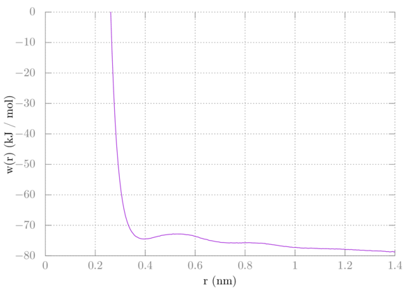
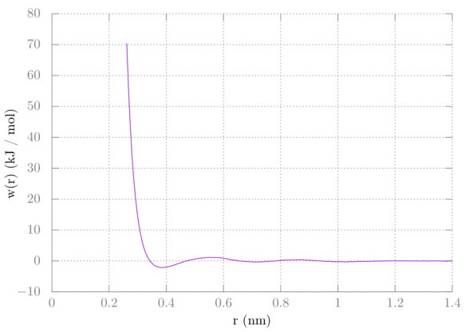
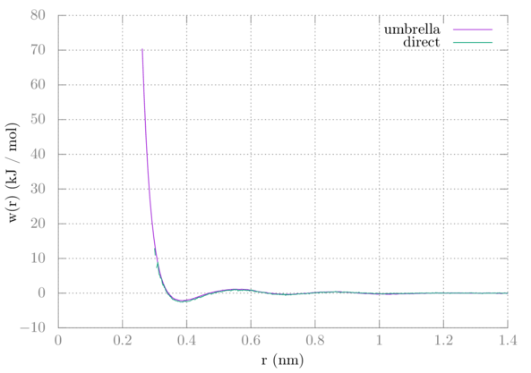
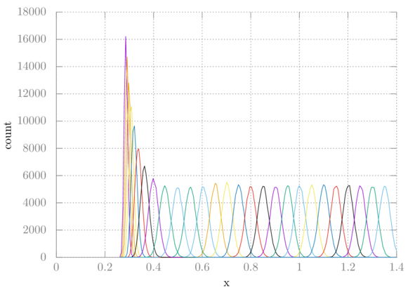

GROMACS Tutorial 5 -- Methane-Methane PMF from Window Sampling
In this tutorial we'll be using window sampling, also sometimes known as umbrella sampling, to extract the methane-methane potential of mean force. In tutorial 3 we got the PMF the direct way by simulating several methanes and getting the radial distribution function. It's not always possible to sample several solutes like this.
We are going to take two methanes and restrain them at different distances using a harmonic potential. The different distances are "windows". In a regular simulation, like the one we did in tutorial 3, some of these windows are rarely sampled. Umbrella sampling solves this by forcing the molecules to stay within a certain range of a set distance.
At the end we'll use the GROMACS implementation of weighted histogram analysis (WHAM) to reconstruct the PMF. An article on the Alchemistry wiki discusses WHAM in the context of alchemical changes. Here our reaction coordinate is the distance between the two methanes.
Setup
Create box
Once again we'll be reusing methane.pdb and topol.top from our previous
tutorials. Insert two methanes into a box using gmx insert-molecules and then
solvate the box using gmx solvate. The box needs to be cubic and at least 3.1
nm in each direction for this tutorial.
Create index file
We also need to create an index file with the two groups we are interested in
restraining with our umbrella potential. Create an index file using gmx index
creating a group containing just one carbon from one of the methanes and name
them CA and CB respectively.
$ gmx make_ndx -f conf.gro
Then, assuming the residue CH4 is in group 2:
> splitres 2
Now I assume the last two groups are 6 and 7 which are the two methane molecules:
> 6 & a C
> 7 & a C
Now name the groups:
> name 8 CA
> name 9 CB
> q
There are other ways to get to the same place with gmx make_ndx. The point is,
you need to get each methane carbon in its own index group and name them CA
and CB.
Parameter files
We're pretty much reusing the parameter files from the first few tutorials, except we'll be adding a section on center-of-mass (COM) pulling. The pull code is how we'll keep our methanes a specified distance apart. There are probably a few different ways to set this up, but for this system we'll manually specify each distance we want for the two methanes.
The parameter files for each step are found here.
Just like in the free energy tutorial, these files are templates with a keyword that will be replaced in a bash script. This is because we have to run a full set of simulations for each window and need to specify the distance in each one.
Here's an explanation of the new parameters that are used in each file:
| parameter | value | explanation |
|---|---|---|
| pull | yes | Use the pull code. |
| pull-ngroups | 2 | We have two groups that we're pulling. |
| pull-group1-name | CA | We specified this in the index file. For us this will be the carbon of one of the methanes, although we probably could have chosen the entire methane. If we did that it would have been pulled along the COM of the entire molecule. |
| pull-group2-name | CB | The carbon of the other methane. |
| pull-ncoords | 1 | We are pulling along only one coordinate. |
| pull-coord1-geometry | distance | We're going to pull along the vector connecting our two groups. |
| pull-coord1-type | umbrella | Use an umbrella (harmonic) potential for this coordinate. |
| pull-coord1-groups | 1 2 | For this pull coordinate these are the two groups (defined below) which will be pulled. You can actually have more thane one pull coordinate and so do pulling across different sets of molecules, but that's not applicable here. |
| pull-coord1-k | 5000.0 | The force constant used in the umbrella potential in kJ/(mol nm). |
| pull-coord1-init | WINDOW | This is the distance we want our two groups to be apart. I've put this keyword here that I'll replace in our bash script for each window. |
| pull-coord1-rate | 0.0 | We don't want the groups to move along the coordinate any, so this is 0. |
| pull-coord1-start | no | We're manually specifying the distance for each window, so we do not want to add the center of mass distance to the calculation. |
The parameter files are setup for a 100 ps NVT equilbiration, then a 1 ns NPT equilibration, and lastly a 5 ns production run. We are planning on the methanes getting to the correct distances when the umbrella potential is applied during the equilibrations. For some other systems you may have to be more methodical in how you generate your initial configurations for each window.
Simulation
For the simulations we're going to use a bash script to replace the WINDOW
keyword in our mdp files, very similar to what we did in the free energy
simulation. Here is the script:
#!/bin/bash
set -e
for ((i = 0 ; i < 27 ; i++)); do
x=$(echo "0.05*$(($i+1))" | bc);
sed 's/WINDOW/'$x'/g' mdp/min.mdp > grompp.mdp
gmx grompp -o min.$i -pp min.$i -po min.$i -n index.ndx
gmx mdrun -deffnm min.$i -pf pullf-min.$i -px pullx-min.$i
sed 's/WINDOW/'$x'/g' mdp/min2.mdp > grompp.mdp
gmx grompp -o min2.$i -c min.$i -t min.$i -pp min2.$i -po min2.$i -maxwarn 1 -n index.ndx
gmx mdrun -deffnm min2.$i -pf pullf-min2.$i -px pullx-min2.$i
sed 's/WINDOW/'$x'/g' mdp/eql.mdp > grompp.mdp
gmx grompp -o eql.$i -c min2.$i -t min2.$i -pp eql.$i -po eql.$i -n index.ndx
gmx mdrun -deffnm eql.$i -pf pullf-eql.$i -px pullx-eql.$i
sed 's/WINDOW/'$x'/g' mdp/eql2.mdp > grompp.mdp
gmx grompp -o eql2.$i -c eql.$i -t eql.$i -pp eql2.$i -po eql2.$i -n index.ndx
gmx mdrun -deffnm eql2.$i -pf pullf-eql2.$i -px pullx-eql2.$i
sed 's/WINDOW/'$x'/g' mdp/prd.mdp > grompp.mdp
gmx grompp -o prd.$i -c eql2.$i -t eql2.$i -pp prd.$i -po prd.$i -n index.ndx
gmx mdrun -deffnm prd.$i -pf pullf-prd.$i -px pullx-prd.$i
done
We are simulating 26 windows from 0.05 to around 1.3 nm in distance. Notice that
I've added -pf and -px flags for the pull force and pull distance for each
step. This is because with -deffnm GROMACS will try to write both to the same
file. Also I've specified the index file with -n since gmx grompp needs to
get the groups we specified with the pull parameters. Note that I am using a
little trick with bc in order to do math with floating point numbers in bash.
Analysis
We're going to use gmx wham to get the PMF. The program takes a file
containing a list of the .tpr files and another file containing a list of the
.xvg files containing the force as arguments.
To create these two files do:
$ ls prd.*.tpr > tpr.dat
$ ls pullf-prd.*.xvg > pullf.dat
Then you can run gmx wham:
$ gmx wham -it tpr.dat -f pullf.dat
After running gmx wham you'll get the potential of mean force in a file named
profile.xvg. If you were to plot this right away, it should look like this:

We would expect the interaction to go to zero at longer distances. Because we used a 3-dimensional biasing potential, however, we need to include a correction. Imagine one of the methanes as the reference point. The other methane is allowed to sample all around that point at distance r, covering the surface of some sphere with radius r. This adds extra configurational space to our sampling, decreasing the entropy. This extra entropic contribution to our PMF needs to be removed. Recall that the Gibbs free energy in the isothermal isobaric ensemble is -kTln(W) where W is the partition function. In the case of our methane dancing around the surface of a sphere, W is proportional to the surface area of that sphere. So, a correction of 2kTln(r) needs to be added. Additionally we need to shift the plot up such that its tail goes to zero. I found adding about 77 worked for my particular system, but yours may be different. To plot this in gnuplot do the following in a gnuplot terminal:
> plot 'profile.xvg' u 1:($2+2*8.314e-3*298.15*log($1)+77) w l
Your PMF should now look like this:

Comparing this with the PMF from tutorial 3 we can see that they are nearly identical:

One difference is that with the direct method we never get near as close as with window sampling. Two methanes will not just naturally want to be near each other, which is why we have to add the umbrella potentials to keep them there.
The other output is histo.xvg which is helpful in determining if there is
enough overlap between windows. Here is a plot of each histogram for this
simulation:

Clearly we our windows are overlapping sufficiently. If they were not, we might have to choose a smaller window size or pick specific spots that were missing to simulate.
Summary
In this tutorial we used GROMACS COM pull code to do window sampling on two methanes in water. From there we used gmx wham to extract the potential of mean force.
Author: Wes Barnett, Vedran Miletić